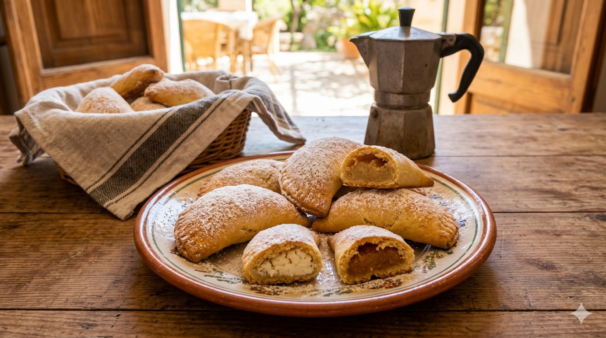

Rubiols
Home

Description:
Rubiols are traditional Mallorcan sweet pastries, typically made during Easter. They are half-moon shaped and filled with either sweet potato, ricotta, or jam. Crispy on the outside and soft on the inside, they are a beloved treat across the Balearic Islands.
Ingredients:
- 500g plain flour
- 125g sugar
- 125g lard (or butter)
- 2 eggs
- 100ml orage juice
- Zest of one lemon
- 1 teaspoon baking powder
- 400g sweet potato (or ricotta, or apricot jam for the filling)
- Sugar and cinnamon for the filling
Steps
- Mix the flour, sugar, baking powder and lemon zest in a large bowl.
- Add the lard and rub it into the flour mixture until it resembles breadcrumbs.
- Beat the eggs with the orange juice and add to the mixture. Knead until you have a smooth dough.
- Let the dough rest for 30 minutes.
- For the sweet potato filling, boil and mash the sweet potato, then mix with sugar and cinnamon to taste.
- Roll the dough out thinly and cut into circles.
- Place a spoonful of filling on one half of each circle, fold over and press the edges firmly to seal.
- Bake at 180°C for about 20 minutes until golden.
- Dust with icing sugar before serving.